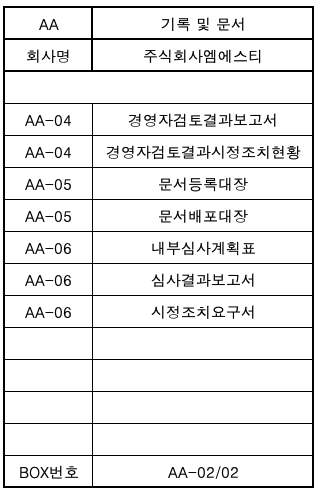

| 문서화된 정보관리 프 로 세 스 | 문서번호 | ||||||||||||||||||||||||||||||||||||||||
| 파일링시스템운영 지침 | MI-0701 | ||||||||||||||||||||||||||||||||||||||||
| 작 성 팀 | 발 행 팀 | 제 정 일 자 | 작성 | 검토 | 승인 | ||||||||||||||||||||||||||||||||||||
| 관리팀 | 관리팀 | 2025-05-28 | 결재完 | 결재完 | 결재完 | ||||||||||||||||||||||||||||||||||||
| NO | 개 정 일 자 | 개 정 사 유 | 개 정 쪽 | 비 고 | |||||||||||||||||||||||||||||||||||||
| 0 | 2025-05-28 | ||||||||||||||||||||||||||||||||||||||||

| 파일링시스템운영 지침 | 문서 번호 | MI-0701 | |||||||||||||||||||||||||||||||||||||||||
| 쪽 | 1 | ||||||||||||||||||||||||||||||||||||||||||
| 제정 일자 | 2025-05-28 | 개정 번호 | 0 | 개정 일자 | 2025-05-28 | 시행일자 | 2025-05-28 | ||||||||||||||||||||||||||||||||||||
| 1. 적용범위 | |||||||||||||||||||||||||||||||||||||||||||
| 본 지침은 당사의 문서 및 파일링에 대하여 적용한다. | |||||||||||||||||||||||||||||||||||||||||||
| 2. 목 적 | |||||||||||||||||||||||||||||||||||||||||||
| 본 지침서는 당사에서 사용하는 모든 파일의 운영방법 및 보관, 보존, 폐기등에 대한 업무처리 절차에 대해 효율적인 | |||||||||||||||||||||||||||||||||||||||||||
| 관리를 도모하는데 목적이 있다. | |||||||||||||||||||||||||||||||||||||||||||
| 3. 용어의 정의 | |||||||||||||||||||||||||||||||||||||||||||
| 3.1 파일링 시스템 (FILING SYSTEM : F/S) | |||||||||||||||||||||||||||||||||||||||||||
| 업무를 수행하면서 발생되는 모든 문서, 자료, 도면, 장표, 기록 등을 필요에 따라 | |||||||||||||||||||||||||||||||||||||||||||
| 즉시 이용할 수 있도록 그 발행에서부터 조직적이고 체계적으로 분류 정리한 후 | |||||||||||||||||||||||||||||||||||||||||||
| 보관 및 보존단계를 거쳐 제도적으로 폐기시키는 일련의 기록관리 시스템을 | |||||||||||||||||||||||||||||||||||||||||||
| 말한다. | |||||||||||||||||||||||||||||||||||||||||||
| 4. 책임과 권한 | |||||||||||||||||||||||||||||||||||||||||||
| 4.1 관리 부서장 (대표 이사 총괄) | |||||||||||||||||||||||||||||||||||||||||||
| 4.1.1 문서고의 관리는 대표이사가 총괄 집행한다. | |||||||||||||||||||||||||||||||||||||||||||
| 4.1.2 문서고의 보존, 문서관리 방법을 결정한다. | |||||||||||||||||||||||||||||||||||||||||||
| 4.1.3 문서고의 폐기 대상 문서를 식별하고 폐기한다. | |||||||||||||||||||||||||||||||||||||||||||
| 4.1.4 보존 문서 열람 대출대장을 유지관리 되도록 한다. | |||||||||||||||||||||||||||||||||||||||||||
| 4.1.5 문서고에 보존된 문서의 부서별 보존문서 현황을 유지관리 되도록 한다. | |||||||||||||||||||||||||||||||||||||||||||
| 4.2 각 부서장 | |||||||||||||||||||||||||||||||||||||||||||
| 4.2.1 부서내 보관중인 문서, 기록의 폐기 여부를 대표이사에게 보고 한다. | |||||||||||||||||||||||||||||||||||||||||||
| 4.2.2 보관, 보존 문서를 결정한다. | |||||||||||||||||||||||||||||||||||||||||||
| 4.2.3 문서이관, 폐기 목록표를 승인한다. | |||||||||||||||||||||||||||||||||||||||||||
| 4.2.4 FILING SYSTEM 이 지속적으로 유지관리 되도록 한다. | |||||||||||||||||||||||||||||||||||||||||||
| 5. 업무 처리 절차 | |||||||||||||||||||||||||||||||||||||||||||
| 5.1 FILING SYSTEM의 기본 | |||||||||||||||||||||||||||||||||||||||||||
| 5.1.1 전사원의 참가 MIND 형성 | |||||||||||||||||||||||||||||||||||||||||||
| 파일링 시스템은 전부서의 동참없이는 성공할 수 없으므로 홍보와 교육이 필요하다. | |||||||||||||||||||||||||||||||||||||||||||
| 5.1.2 RULE의 준수 | |||||||||||||||||||||||||||||||||||||||||||
| 본 지침서에 의거하여 각 부서원은 파일관리를 법처럼 준수한다. | |||||||||||||||||||||||||||||||||||||||||||
| 5.1.3 OPEN MIND | |||||||||||||||||||||||||||||||||||||||||||
| 당사에서 설정한 기밀문서를 제외하고 모든 문서나 자료, 기록은 공유화의 대상으로 간주하여 보관, 관리 | |||||||||||||||||||||||||||||||||||||||||||
| 활용되도록 한다. | |||||||||||||||||||||||||||||||||||||||||||
| 5.1.4 폐기는 FILING의 지름길 | |||||||||||||||||||||||||||||||||||||||||||
| 불필요한 문서나 기록은 각 부서장의 책임하에 과감하게 폐기한다. | |||||||||||||||||||||||||||||||||||||||||||
| 5.1.5 문서의 발행 억제 | |||||||||||||||||||||||||||||||||||||||||||
| 필요이상으로 많은 문서를 작성 또는 인쇄 하여 배부하지 않는다. | |||||||||||||||||||||||||||||||||||||||||||
| 5.1.6 문서의 보존 연한은 문서의 발행연도를 포함한 익년 1월 1일부터 가산한다. | |||||||||||||||||||||||||||||||||||||||||||
| 5.2 보관문서 정리방법 | |||||||||||||||||||||||||||||||||||||||||||
| 5.2.1 보관문서는 정보가치가 충분한 것으로 검색빈도가 많으며 각 부서에서 공동 보유 하는 문서를 의미한다. | |||||||||||||||||||||||||||||||||||||||||||
| 5.2.2 몇 년전에 발행한 문서라도 활용빈도 (4회/년 이상검색)가 높은 것은 각 부서장의 판단하에 보관 문서로 | |||||||||||||||||||||||||||||||||||||||||||
| 할 수 있다. | |||||||||||||||||||||||||||||||||||||||||||
| 5.2.3 당해 연도 발생문서라도 각 부서장이 판단하여 활용 빈도가 낮은 것은 보존 또는 폐기 문서로 할 수 | |||||||||||||||||||||||||||||||||||||||||||
| 있다. | |||||||||||||||||||||||||||||||||||||||||||
| 5.2.4 각 부서에서는 기능별 (내용별, 주제별) , PROJECT 별로 문서를 분류한다. | |||||||||||||||||||||||||||||||||||||||||||
| 5.2.5 한 개의 홀더(HOLDER)에 100~150매를 초과하지 않는 범위내에서 동일한 기능(제목,내용)의 문서를 | |||||||||||||||||||||||||||||||||||||||||||
| 편철한다. | |||||||||||||||||||||||||||||||||||||||||||
| 5.2.6 한 개의 홀더에는 당해 연도 문서만 편철한다. | |||||||||||||||||||||||||||||||||||||||||||
| 단, 문서발행 빈도가 낮은 문서는 보존 연한을 근거로 각 부서장이 판단하여 차기 연도 문서라도 합철할 | |||||||||||||||||||||||||||||||||||||||||||
| 수 있다. | |||||||||||||||||||||||||||||||||||||||||||
| 5.2.7 홀더의 편철은 좌철을 원칙으로 하나 좌철시 기록이 보이지 않을 경우는 상철 할수 있다. | |||||||||||||||||||||||||||||||||||||||||||
| 5.2.8 문서의 크기는 A4기준이며 사이즈에 맞지 않을 경우에는 접어서 편철한다. | |||||||||||||||||||||||||||||||||||||||||||
| 단, 경리 FILE, 전산장부는 색인표를 부착하여 별도로 보관한다. | |||||||||||||||||||||||||||||||||||||||||||
| 5.3 보존문서 정리 방법 | |||||||||||||||||||||||||||||||||||||||||||
| 5.3.1 보존문서는 정보의 가치 있지만 활용 빈도가 낮은 문서로 각 프로세스에 언급 되었거나 부서장이 | |||||||||||||||||||||||||||||||||||||||||||
| 설정한 보존 연한 동안 보존한다. | |||||||||||||||||||||||||||||||||||||||||||
| 5.3.2 "문서 및 기록 분류표"상의 보존 연한이 같은 문서끼리 모아 분류한다. | |||||||||||||||||||||||||||||||||||||||||||
| 5.3.3 당해 연도 문서라도 각부서장이 판단하여 활용빈도가 낮은 것은 보존문서로 할수 있다. | |||||||||||||||||||||||||||||||||||||||||||
| 5.3.4 문서의 보존은 각 부서장이 판단하여 부서자체 문서 보관함에 보존하며 필요에 따라 문서고로 | |||||||||||||||||||||||||||||||||||||||||||
| 이관하여 보존한다. | |||||||||||||||||||||||||||||||||||||||||||
| 5.3.5 각 부서내에서는 문서를 문서고로 이관시" 사내업무연락"을 작성하여 부서장의 승인을 받아 문서고 | |||||||||||||||||||||||||||||||||||||||||||
| 관리 부서로 문서와 함께 이관한다. | |||||||||||||||||||||||||||||||||||||||||||
| 5.3.6 문서고 관리 부서에서는 이관 받은 문서를 이 지침서 5.6항(문서고 운영 및 관리)과 같은 보존 연한 | |||||||||||||||||||||||||||||||||||||||||||
| 동안 관리한다. | |||||||||||||||||||||||||||||||||||||||||||
| 5.3.7 문서 보존 연한은 영구, 10년, 5년, 3년, 1년으로 한다. | |||||||||||||||||||||||||||||||||||||||||||
| 단, 법적 및 고객 요구사항이 있을 경우에는 이에 따른다. | |||||||||||||||||||||||||||||||||||||||||||
| 5.4 폐기문서 정리 방법 | |||||||||||||||||||||||||||||||||||||||||||
| 5.4.1 미래 지향적 보다는 과거 지향적으로 폐기한다. 즉, “언젠가는 보겠지”하면서 현재까지 한번도 본적이 | |||||||||||||||||||||||||||||||||||||||||||
| 없는 문서는 각 부서장이 판단하여 폐기한다. | |||||||||||||||||||||||||||||||||||||||||||
| 5.4.2 폐기 대상 문서는 아래와 같으며 이에 국한하지 않는다. | |||||||||||||||||||||||||||||||||||||||||||
| 5.4.2.1 불필요한 MEMO, 초안문서, 오래된 연하장, 문안장 등 | |||||||||||||||||||||||||||||||||||||||||||
| 5.4.2.2 개정하기 전의 구본 문서 | |||||||||||||||||||||||||||||||||||||||||||
| 5.4.2.3 각종 COPY문서, 각 부서의 중복 보관 문서, 참고 자료 등 | |||||||||||||||||||||||||||||||||||||||||||
| 5.4.2.4 계약 만기가 끝난 문서 | |||||||||||||||||||||||||||||||||||||||||||
| 5.4.2.5 참고로 접수된 품의서, 협조전, 보고서, 계획서, 일지 등 | |||||||||||||||||||||||||||||||||||||||||||
| 5.4.2.6 보존 연한이 경과된 문서 | |||||||||||||||||||||||||||||||||||||||||||
| 5.4.2.7 각 부서장이 폐기해도 된다고 판단한 문서 | |||||||||||||||||||||||||||||||||||||||||||
| 5.5 폐기 방법 | |||||||||||||||||||||||||||||||||||||||||||
| 5.5.1 각 부서장이 판단하여 부서 자체에서 폐기 할 수 있으며 문서고로 이관된 문서는 문서고 관리 | |||||||||||||||||||||||||||||||||||||||||||
| 부서에서 보존 연한에 따라 폐기한다. | |||||||||||||||||||||||||||||||||||||||||||
| 5.5.2 각 부서에서는 문서 폐기 의뢰시 “품의서”에 작성하여 부서장의 승인을 받아 문서와 함께 문서고 | |||||||||||||||||||||||||||||||||||||||||||
| 관리 부서에 송부한다. | |||||||||||||||||||||||||||||||||||||||||||
| 5.5.3 문서고 관리 부서에서는 매년 발행되는 폐기문서를 일괄 취합하여 부서장의 승인을 받아 자체에서 | |||||||||||||||||||||||||||||||||||||||||||
| 소각시키거나 용역회사에 의뢰하여 소각 처리한다. | |||||||||||||||||||||||||||||||||||||||||||
| 5.6 문서고 운영 및 관리 | |||||||||||||||||||||||||||||||||||||||||||
| 5.6.1 문서고 관리 부서는 문서고의 서가에 부서별 보존 문서량을 감안하여 서가를 할당 하여 식별 | |||||||||||||||||||||||||||||||||||||||||||
| 되도록 표찰을 부착한다. | |||||||||||||||||||||||||||||||||||||||||||
| 5.6.2 보존문서의 배열 | |||||||||||||||||||||||||||||||||||||||||||
| 5.6.2.1 보존문서의 배열은 부서별, 폐기연도별로 배열한다. | |||||||||||||||||||||||||||||||||||||||||||
| 5.6.2.2 전산출력 자료, 전표철, 각종 대장 등의 특정 다량의 문서는 문서고 관리팀장 이 지정한 | |||||||||||||||||||||||||||||||||||||||||||
| 일정한 장소에 일괄 보존 할 수 있다. | |||||||||||||||||||||||||||||||||||||||||||
| 5.6.3 문서고 운영 방법 | |||||||||||||||||||||||||||||||||||||||||||
| 5.6.3.1 문서고 관리 담당자는 이관 문서의 접수, 정리, 배치, 보존관리를 한다. | |||||||||||||||||||||||||||||||||||||||||||
| 5.6.3.2 문서고 관리 담당자는 문서 이관, 폐기 목록표를 유지 관리한다. | |||||||||||||||||||||||||||||||||||||||||||
| 5.6.3.3 문서고 관리 담당자는 "보존문서 열람, 대출대장"을 비치 관리하여 보존 문서의 대출기간은 | |||||||||||||||||||||||||||||||||||||||||||
| 7일 이내로하며"부서별 보존 문서 현황"을작성하여 관리 한다. | |||||||||||||||||||||||||||||||||||||||||||
| 5.6.3.4 문서고 관리 담당자는 당해 연도 폐기문서의 폐기일자, 방법 등을 각부서와 협의 한 후 | |||||||||||||||||||||||||||||||||||||||||||
| 폐기 처리한다. | |||||||||||||||||||||||||||||||||||||||||||
| 5.6.3.5 문서고 관리 담당자는 매년초 문서 이관 또는 폐기에 대한 협조전을 작성하고 부서장의 검토 | |||||||||||||||||||||||||||||||||||||||||||
| 및 승인을 받아 각 부서에 문서 이관 및 폐기 작업 일정 및 시행사항을 통보한다. | |||||||||||||||||||||||||||||||||||||||||||
| 5.6.3.6 문서고 관리 담당자는 문서고 LAYOUT을 작성하여 부서장의 승인을 받아 유지 관리하며 | |||||||||||||||||||||||||||||||||||||||||||
| 주기적으로 문서고를 점검한다. | |||||||||||||||||||||||||||||||||||||||||||
| 5.6.3.7 각 부서에는 문서고로 이관하지 않고 부서 자체의 서고에 보존 할 경우는 보관 문서와 | |||||||||||||||||||||||||||||||||||||||||||
| 식별 되도록 관리 한다. | |||||||||||||||||||||||||||||||||||||||||||
| 5.7 기록 파일링 기재방법 | |||||||||||||||||||||||||||||||||||||||||||
| 5.7.1 면장철 겉표지 작성 방법 | |||||||||||||||||||||||||||||||||||||||||||
| 5.7.2 파일 겉표지 작성방법 | |||||||||||||||||||||||||||||||||||||||||||
| 1) 파일 겉표지 작성 | |||||||||||||||||||||||||||||||||||||||||||
| (1) 문서의 "제목"을 기재한다. | |||||||||||||||||||||||||||||||||||||||||||
| ● 문서가 여러 개 편철될 경우는 글씨 크기를 조절하여 여러 개의 문서명을 모두 기재한다. | |||||||||||||||||||||||||||||||||||||||||||
| ○ 연간 교육 계획서 | |||||||||||||||||||||||||||||||||||||||||||
| ○ 월간 교육 계획서 | |||||||||||||||||||||||||||||||||||||||||||
| ○ 교육일지 | |||||||||||||||||||||||||||||||||||||||||||
| (2) "부서명"을 기록 한다. | |||||||||||||||||||||||||||||||||||||||||||
| (3) "회사명"을 기재 한다. | |||||||||||||||||||||||||||||||||||||||||||
| (4) "조견표"를 작성 한다. | |||||||||||||||||||||||||||||||||||||||||||
| 조견표 보기) | |||||||||||||||||||||||||||||||||||||||||||
| * 편철되는 문서명이 여러 개의 경우는 첫번째의 문서명만 기재 한다. | |||||||||||||||||||||||||||||||||||||||||||
| 5.7.3 문서 보관 상자 (문서 BOX) 작성 방법 | |||||||||||||||||||||||||||||||||||||||||||
| ⊙ 홀더를 FILE BOX에 보관할 때는 문서의 양에 따라 폴더 수량이 달라 질 수 있으며 | |||||||||||||||||||||||||||||||||||||||||||
| 왼쪽에서부터 오른쪽으로 파일 NO 순서에 의해 보관한다. | |||||||||||||||||||||||||||||||||||||||||||
| ⊙ 기존 홀더에서 추가로 발생될 경우에는 보기와 같이 파일번호를 부여한다. | |||||||||||||||||||||||||||||||||||||||||||
| 보기1) AA-04 에서 추가로 발생되면 AA-04-01,02,03,04,05……로 부여한다. | |||||||||||||||||||||||||||||||||||||||||||
| 보기2) 수입검사성적서를 공급자 별로 구분하여 보관한다 | |||||||||||||||||||||||||||||||||||||||||||
| 5.7.4 각 파일 BOX 및 파일에 부착하는 태그의 글씨체는 "HY헤드라인M"으로 한다. | |||||||||||||||||||||||||||||||||||||||||||
(1)
(1)
(2)
(3)
(4)
(2)
(3)
(5)
(1)파일번호
(2)문서명
(3)부서명
(4) 회사명
(5)회사로그
1.1) 파일 NO. 부여 방법
(첫번째 박스) AA : 기록 및 문서
(두번째 박스) AB : 기록 및 문서
(세번째 박스) AC : 기록 및 문서
보기) ◎ 첫번째 BOX의 첫번째 파일
→ AA-01(발생 순서에 따라 02,
03 …)
◎ 두번째 BOX의 첫번째 파일
→ AB-01
◎ AB-01에서 문서를 분류할 경우는 AB-01-01, 02, 03…으로 분류한다.
*측면은 필요시 태그를 부착한다.
(1)
(4)
(2)
(3)
← 품질경영시스템
(EX : 기록 및 문서)
(FILE BOX가 생성됨에 따라AA,AB,AC,AD,
…)
← 문서의 제목을 모두 기재한다.
(파일 BOX에 좌측에서 오른쪽으로
보관된 순서대로 작성)
보기)
회사명 :주식회사엠에스티
BOX번호 : AA-01은 파일 BOX 생성순서를 기재
*AA BOX가 두번째 생성될 경우-----AA-01/02, 02/02

| AA | 기록 및 문서 | |
| 회사명 | 주식회사엠에스티 | |
| AA-04 | 경영자검토결과보고서 | |
| AA-04 | 경영자검토결과시정조치현황 | |
| AA-05 | 문서등록대장 | |
| AA-05 | 문서배포대장 | |
| AA-06 | 내부심사계획표 | |
| AA-06 | 심사결과보고서 | |
| AA-06 | 시정조치요구서 | |
| BOX번호 | AA-02/02 |